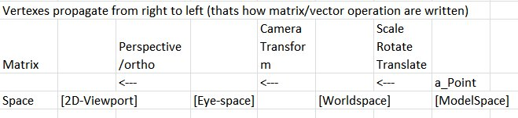

All the cubes are drawn using the same overall form.
I prefer having the matrices separate (also in my shader code) instead of the CTM
Each matrix transform the vertex from one "space" to the next as my drawing below illustrate
